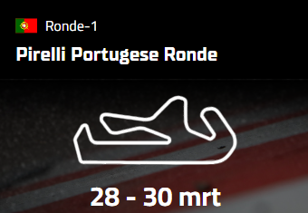
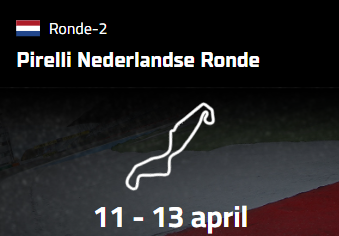
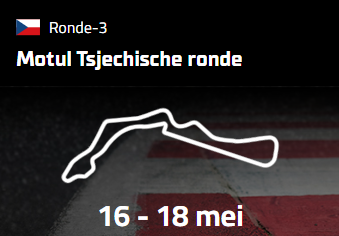
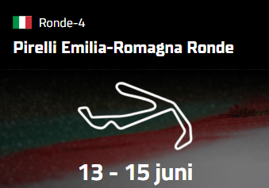
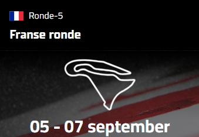
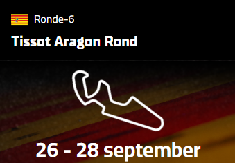
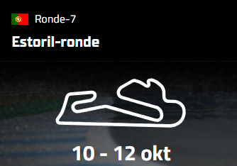
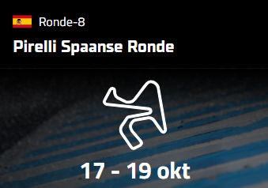

Race Kalender 2024

30 Maart
Portimão
Portugal
Ronde 1
2 races

13 April
Assen
Nederland
Ronde 2
2 races

18 Mei
Most
Tsjechische Republiek
Ronde 3
2 races

15 Juni
Misano
San Marino
Ronde 4
2 races

7 September
Magny-Cours
Frankrijk
Ronde 5
2 races

28 September
Aragón
Spanje
Ronde 6
2 races

12 Oktober
Estoril
Portugal
Ronde 7
2 races

19 Oktober
Jerez
Spanje
Ronde 8
2 races